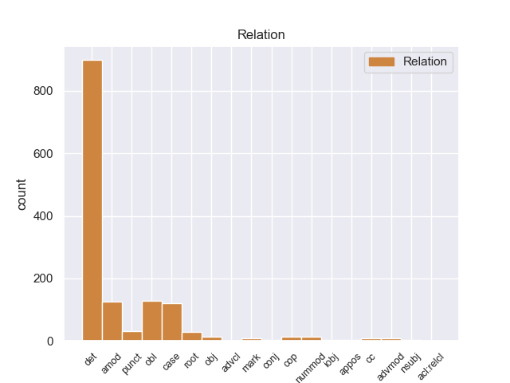
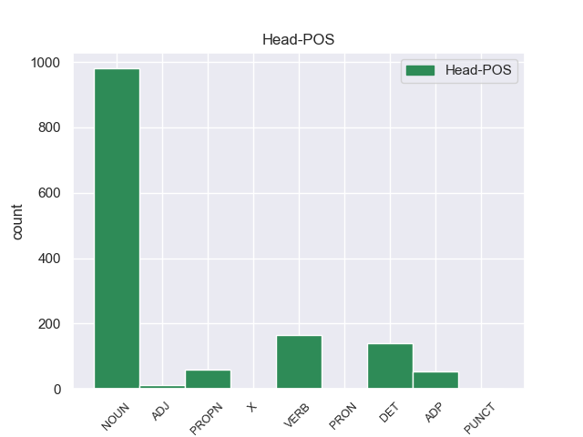
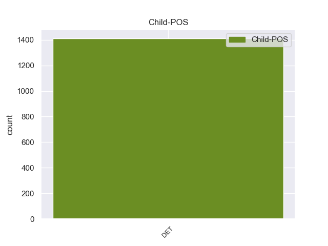

Distribution of features within this leaf



Agreement Rules sorted by frequency.
- When the dependent token is the determiner(det) of the head token, and the dependent token is DET.
1 De _ _ _ _ 0 _ _ _
2 las _ _ _ _ 0 _ _ _
3 8 _ _ _ _ 0 _ _ _
4 porciones _ _ _ _ 0 _ _ _
5 , _ _ _ _ 0 _ _ _
6 cuatro _ _ _ _ 0 _ _ _
7 correspondieron _ _ _ _ 0 _ _ _
8 a _ _ _ _ 0 _ _ _
9 el _ _ _ _ 0 _ _ _
10 rey _ _ _ _ 0 _ _ _
11 , _ _ _ _ 0 _ _ _
12 una _ _ _ _ 0 _ _ _
13 a _ _ _ _ 0 _ _ _
14 el _ _ _ _ 0 _ _ _
15 conde _ _ _ _ 0 _ _ _
16 de _ _ _ _ 0 _ _ _
17 el _ _ _ _ 0 _ _ _
18 Rosellón _ _ _ _ 0 _ _ _
19 Nuño _ _ _ _ 0 _ _ _
20 Sánchez _ _ _ _ 0 _ _ _
21 , _ _ _ _ 0 _ _ _
22 una _ _ _ _ 0 _ _ _
23 a _ _ _ _ 0 _ _ _
24 el _ _ _ _ 0 _ _ _
25 obispo _ _ _ _ 0 _ _ _
26 de _ _ _ _ 0 _ _ _
27 Barcelona _ _ _ _ 0 _ _ _
28 Berenguer _ _ _ _ 0 _ _ _
29 de _ _ _ _ 0 _ _ _
30 Palou _ _ _ _ 0 _ _ _
31 , _ _ _ _ 0 _ _ _
32 una _ _ _ _ 0 _ _ _
33 a _ _ _ _ 0 _ _ _
34 el _ _ _ _ 0 _ _ _
35 Conde conde NOUN _ Gender=Masc|Number=Sing 0 _ _ _
36 de _ _ _ _ 0 _ _ _
37 Ampurias _ _ _ _ 0 _ _ _
38 y _ _ _ _ 0 _ _ _
39 finalmente _ _ _ _ 0 _ _ _
40 otra _ _ _ _ 0 _ _ _
41 a _ _ _ _ 0 _ _ _
42 el el DET _ Definite=Def|Gender=Masc|Number=Sing|PronType=Art 35 det _ _
43 vizconde _ _ _ _ 0 _ _ _
44 de _ _ _ _ 0 _ _ _
45 Bearn _ _ _ _ 0 _ _ _
46 . _ _ _ _ 0 _ _ _
1 El _ _ _ _ 0 _ _ _
2 municipio municipio NOUN _ Gender=Masc|Number=Sing 0 _ _ _
3 de _ _ _ _ 0 _ _ _
4 Republic _ _ _ _ 0 _ _ _
5 ( _ _ _ _ 0 _ _ _
6 en _ _ _ _ 0 _ _ _
7 inglés inglés DET _ Gender=Masc|Number=Sing 2 amod _ _
8 : _ _ _ _ 0 _ _ _
9 Republic _ _ _ _ 0 _ _ _
10 Township _ _ _ _ 0 _ _ _
11 ) _ _ _ _ 0 _ _ _
12 es _ _ _ _ 0 _ _ _
13 un _ _ _ _ 0 _ _ _
14 municipio _ _ _ _ 0 _ _ _
15 ubicado _ _ _ _ 0 _ _ _
16 en _ _ _ _ 0 _ _ _
17 el _ _ _ _ 0 _ _ _
18 condado _ _ _ _ 0 _ _ _
19 de _ _ _ _ 0 _ _ _
20 Marquette _ _ _ _ 0 _ _ _
21 en _ _ _ _ 0 _ _ _
22 el _ _ _ _ 0 _ _ _
23 estado _ _ _ _ 0 _ _ _
24 estadounidense _ _ _ _ 0 _ _ _
25 de _ _ _ _ 0 _ _ _
26 Míchigan _ _ _ _ 0 _ _ _
27 . _ _ _ _ 0 _ _ _
1 Junto _ _ _ _ 0 _ _ _
2 a _ _ _ _ 0 _ _ _
3 esta _ _ _ _ 0 _ _ _
4 entrada _ _ _ _ 0 _ _ _
5 se _ _ _ _ 0 _ _ _
6 extiende extiende VERB _ Gender=Masc|Number=Sing 0 _ _ _
7 la _ _ _ _ 0 _ _ _
8 parte _ _ _ _ 0 _ _ _
9 más _ _ _ _ 0 _ _ _
10 antigua antigua DET _ Gender=Masc|Number=Sing 6 obl _ _
11 de _ _ _ _ 0 _ _ _
12 el _ _ _ _ 0 _ _ _
13 cementerio _ _ _ _ 0 _ _ _
14 , _ _ _ _ 0 _ _ _
15 con _ _ _ _ 0 _ _ _
16 varios _ _ _ _ 0 _ _ _
17 panteones _ _ _ _ 0 _ _ _
18 de _ _ _ _ 0 _ _ _
19 estilo _ _ _ _ 0 _ _ _
20 neoclásico _ _ _ _ 0 _ _ _
21 y _ _ _ _ 0 _ _ _
22 modernista _ _ _ _ 0 _ _ _
23 . _ _ _ _ 0 _ _ _
1 Del _ _ _ _ 0 _ _ _
2 total _ _ _ _ 0 _ _ _
3 de _ _ _ _ 0 _ _ _
4 la _ _ _ _ 0 _ _ _
5 población _ _ _ _ 0 _ _ _
6 el _ _ _ _ 0 _ _ _
7 7.18 7.18 DET _ Gender=Masc|Number=Sing 12 case _ _
8 % _ _ _ _ 0 _ _ _
9 eran _ _ _ _ 0 _ _ _
10 hispanos _ _ _ _ 0 _ _ _
11 o _ _ _ _ 0 _ _ _
12 latinos latinos VERB _ Gender=Masc|Number=Sing 0 _ _ _
13 de _ _ _ _ 0 _ _ _
14 cualquier _ _ _ _ 0 _ _ _
15 raza _ _ _ _ 0 _ _ _
16 . _ _ _ _ 0 _ _ _
1 Su _ _ _ _ 0 _ _ _
2 carrera _ _ _ _ 0 _ _ _
3 de _ _ _ _ 0 _ _ _
4 entrenador _ _ _ _ 0 _ _ _
5 comienza _ _ _ _ 0 _ _ _
6 en _ _ _ _ 0 _ _ _
7 el _ _ _ _ 0 _ _ _
8 año _ _ _ _ 0 _ _ _
9 2008 _ _ _ _ 0 _ _ _
10 , _ _ _ _ 0 _ _ _
11 cuando _ _ _ _ 0 _ _ _
12 dirigía _ _ _ _ 0 _ _ _
13 a _ _ _ _ 0 _ _ _
14 el _ _ _ _ 0 _ _ _
15 club _ _ _ _ 0 _ _ _
16 Deportes _ _ _ _ 0 _ _ _
17 Naval _ _ _ _ 0 _ _ _
18 de _ _ _ _ 0 _ _ _
19 la _ _ _ _ 0 _ _ _
20 Tercera _ _ _ _ 0 _ _ _
21 División _ _ _ _ 0 _ _ _
22 de _ _ _ _ 0 _ _ _
23 el _ _ _ _ 0 _ _ _
24 fútbol _ _ _ _ 0 _ _ _
25 chileno _ _ _ _ 0 _ _ _
26 , _ _ _ _ 0 _ _ _
27 equipo _ _ _ _ 0 _ _ _
28 con _ _ _ _ 0 _ _ _
29 el _ _ _ _ 0 _ _ _
30 cual _ _ _ _ 0 _ _ _
31 logra _ _ _ _ 0 _ _ _
32 el _ _ _ _ 0 _ _ _
33 campeonato campeonato NOUN _ Gender=Masc|Number=Sing 0 _ _ _
34 de _ _ _ _ 0 _ _ _
35 la _ _ _ _ 0 _ _ _
36 categoría _ _ _ _ 0 _ _ _
37 y _ _ _ _ 0 _ _ _
38 asciende _ _ _ _ 0 _ _ _
39 a _ _ _ _ 0 _ _ _
40 Primera _ _ _ _ 0 _ _ _
41 B _ _ _ _ 0 _ _ _
42 , _ _ _ _ 0 _ _ _
43 y _ _ _ _ 0 _ _ _
44 el _ _ _ _ 0 _ _ _
45 que _ _ _ _ 0 _ _ _
46 a _ _ _ _ 0 _ _ _
47 el _ _ _ _ 0 _ _ _
48 que _ _ _ _ 0 _ _ _
49 abandonaría _ _ _ _ 0 _ _ _
50 después _ _ _ _ 0 _ _ _
51 por _ _ _ _ 0 _ _ _
52 los _ _ _ _ 0 _ _ _
53 malos _ _ _ _ 0 _ _ _
54 resultados _ _ _ _ 0 _ _ _
55 en _ _ _ _ 0 _ _ _
56 el _ _ _ _ 0 _ _ _
57 campeonato _ _ _ _ 0 _ _ _
58 profesional _ _ _ _ 0 _ _ _
59 de _ _ _ _ 0 _ _ _
60 el _ _ _ _ 0 _ _ _
61 siguiente _ _ _ _ 0 _ _ _
62 año año DET _ Gender=Masc|Number=Sing 33 punct _ _
63 . _ _ _ _ 0 _ _ _
1 Alrededor _ _ _ _ 0 _ _ _
2 de _ _ _ _ 0 _ _ _
3 el _ _ _ _ 0 _ _ _
4 10.90 _ _ _ _ 0 _ _ _
5 % % DET _ Gender=Masc|Number=Sing 12 root _ _
6 de _ _ _ _ 0 _ _ _
7 la _ _ _ _ 0 _ _ _
8 población _ _ _ _ 0 _ _ _
9 estaba _ _ _ _ 0 _ _ _
10 bajo _ _ _ _ 0 _ _ _
11 el _ _ _ _ 0 _ _ _
12 umbral umbral NOUN _ Gender=Masc|Number=Sing 0 _ _ _
13 de _ _ _ _ 0 _ _ _
14 pobreza _ _ _ _ 0 _ _ _
15 nacional _ _ _ _ 0 _ _ _
16 . _ _ _ _ 0 _ _ _
1 Comarca _ _ _ _ 0 _ _ _
2 serrana _ _ _ _ 0 _ _ _
3 y _ _ _ _ 0 _ _ _
4 con _ _ _ _ 0 _ _ _
5 pretensiones _ _ _ _ 0 _ _ _
6 mineras _ _ _ _ 0 _ _ _
7 ( _ _ _ _ 0 _ _ _
8 carbón _ _ _ _ 0 _ _ _
9 y _ _ _ _ 0 _ _ _
10 cobre _ _ _ _ 0 _ _ _
11 ) _ _ _ _ 0 _ _ _
12 de _ _ _ _ 0 _ _ _
13 vieja _ _ _ _ 0 _ _ _
14 historia _ _ _ _ 0 _ _ _
15 que _ _ _ _ 0 _ _ _
16 gira _ _ _ _ 0 _ _ _
17 en _ _ _ _ 0 _ _ _
18 torno _ _ _ _ 0 _ _ _
19 a _ _ _ _ 0 _ _ _
20 dos _ _ _ _ 0 _ _ _
21 monasterios _ _ _ _ 0 _ _ _
22 medievales _ _ _ _ 0 _ _ _
23 : _ _ _ _ 0 _ _ _
24 San _ _ _ _ 0 _ _ _
25 Cristóbal _ _ _ _ 0 _ _ _
26 de _ _ _ _ 0 _ _ _
27 Ibeas _ _ _ _ 0 _ _ _
28 , _ _ _ _ 0 _ _ _
29 de _ _ _ _ 0 _ _ _
30 el _ _ _ _ 0 _ _ _
31 cual _ _ _ _ 0 _ _ _
32 no _ _ _ _ 0 _ _ _
33 queda queda VERB _ Gender=Masc|Number=Sing 0 _ _ _
34 casi _ _ _ _ 0 _ _ _
35 ni _ _ _ _ 0 _ _ _
36 la _ _ _ _ 0 _ _ _
37 memoria memoria DET _ Gender=Masc|Number=Sing 33 obj _ _
38 de _ _ _ _ 0 _ _ _
39 su _ _ _ _ 0 _ _ _
40 emplazamiento _ _ _ _ 0 _ _ _
41 , _ _ _ _ 0 _ _ _
42 y _ _ _ _ 0 _ _ _
43 el _ _ _ _ 0 _ _ _
44 de _ _ _ _ 0 _ _ _
45 Santa _ _ _ _ 0 _ _ _
46 María _ _ _ _ 0 _ _ _
47 de _ _ _ _ 0 _ _ _
48 Bujedo _ _ _ _ 0 _ _ _
49 . _ _ _ _ 0 _ _ _
1 De _ _ _ _ 0 _ _ _
2 los _ _ _ _ 0 _ _ _
3 546 _ _ _ _ 0 _ _ _
4 habitantes _ _ _ _ 0 _ _ _
5 , _ _ _ _ 0 _ _ _
6 Chester _ _ _ _ 0 _ _ _
7 estaba _ _ _ _ 0 _ _ _
8 compuesto _ _ _ _ 0 _ _ _
9 por _ _ _ _ 0 _ _ _
10 el _ _ _ _ 0 _ _ _
11 98.72 _ _ _ _ 0 _ _ _
12 % _ _ _ _ 0 _ _ _
13 blancos _ _ _ _ 0 _ _ _
14 , _ _ _ _ 0 _ _ _
15 el _ _ _ _ 0 _ _ _
16 0 _ _ _ _ 0 _ _ _
17 % _ _ _ _ 0 _ _ _
18 eran _ _ _ _ 0 _ _ _
19 afroamericanos _ _ _ _ 0 _ _ _
20 , _ _ _ _ 0 _ _ _
21 el _ _ _ _ 0 _ _ _
22 0.37 _ _ _ _ 0 _ _ _
23 % _ _ _ _ 0 _ _ _
24 eran _ _ _ _ 0 _ _ _
25 amerindios _ _ _ _ 0 _ _ _
26 , _ _ _ _ 0 _ _ _
27 el _ _ _ _ 0 _ _ _
28 0.18 0.18 DET _ Gender=Masc|Number=Sing 0 _ _ _
29 % _ _ _ _ 0 _ _ _
30 eran _ _ _ _ 0 _ _ _
31 asiáticos _ _ _ _ 0 _ _ _
32 , _ _ _ _ 0 _ _ _
33 el _ _ _ _ 0 _ _ _
34 0 _ _ _ _ 0 _ _ _
35 % _ _ _ _ 0 _ _ _
36 eran _ _ _ _ 0 _ _ _
37 isleños _ _ _ _ 0 _ _ _
38 de _ _ _ _ 0 _ _ _
39 el _ _ _ _ 0 _ _ _
40 Pacífico _ _ _ _ 0 _ _ _
41 , _ _ _ _ 0 _ _ _
42 el _ _ _ _ 0 _ _ _
43 0 0 DET _ Gender=Masc|Number=Sing 28 cop _ _
44 % _ _ _ _ 0 _ _ _
45 eran _ _ _ _ 0 _ _ _
46 de _ _ _ _ 0 _ _ _
47 otras _ _ _ _ 0 _ _ _
48 razas _ _ _ _ 0 _ _ _
49 y _ _ _ _ 0 _ _ _
50 el _ _ _ _ 0 _ _ _
51 0.73 _ _ _ _ 0 _ _ _
52 % _ _ _ _ 0 _ _ _
53 pertenecían _ _ _ _ 0 _ _ _
54 a _ _ _ _ 0 _ _ _
55 dos _ _ _ _ 0 _ _ _
56 o _ _ _ _ 0 _ _ _
57 más _ _ _ _ 0 _ _ _
58 razas _ _ _ _ 0 _ _ _
59 . _ _ _ _ 0 _ _ _
1 Saint _ _ _ _ 0 _ _ _
2 - _ _ _ _ 0 _ _ _
3 Hippolyte _ _ _ _ 0 _ _ _
4 ( _ _ _ _ 0 _ _ _
5 en _ _ _ _ 0 _ _ _
6 occitano occitano DET _ Gender=Masc|Number=Sing 12 nummod _ _
7 Sent _ _ _ _ 0 _ _ _
8 Ipòli _ _ _ _ 0 _ _ _
9 ) _ _ _ _ 0 _ _ _
10 es _ _ _ _ 0 _ _ _
11 una _ _ _ _ 0 _ _ _
12 población población PROPN _ Gender=Masc|Number=Sing 0 _ _ _
13 y _ _ _ _ 0 _ _ _
14 comuna _ _ _ _ 0 _ _ _
15 francesa _ _ _ _ 0 _ _ _
16 , _ _ _ _ 0 _ _ _
17 situada _ _ _ _ 0 _ _ _
18 en _ _ _ _ 0 _ _ _
19 la _ _ _ _ 0 _ _ _
20 región _ _ _ _ 0 _ _ _
21 de _ _ _ _ 0 _ _ _
22 Aquitania _ _ _ _ 0 _ _ _
23 , _ _ _ _ 0 _ _ _
24 departamento _ _ _ _ 0 _ _ _
25 de _ _ _ _ 0 _ _ _
26 Gironda _ _ _ _ 0 _ _ _
27 , _ _ _ _ 0 _ _ _
28 en _ _ _ _ 0 _ _ _
29 el _ _ _ _ 0 _ _ _
30 distrito _ _ _ _ 0 _ _ _
31 de _ _ _ _ 0 _ _ _
32 Libourne _ _ _ _ 0 _ _ _
33 y _ _ _ _ 0 _ _ _
34 cantón _ _ _ _ 0 _ _ _
35 de _ _ _ _ 0 _ _ _
36 Castillon _ _ _ _ 0 _ _ _
37 - _ _ _ _ 0 _ _ _
38 la _ _ _ _ 0 _ _ _
39 - _ _ _ _ 0 _ _ _
40 Bataille _ _ _ _ 0 _ _ _
41 . _ _ _ _ 0 _ _ _
1 De _ _ _ _ 0 _ _ _
2 los _ _ _ _ 0 _ _ _
3 439 _ _ _ _ 0 _ _ _
4 habitantes _ _ _ _ 0 _ _ _
5 , _ _ _ _ 0 _ _ _
6 el _ _ _ _ 0 _ _ _
7 municipio _ _ _ _ 0 _ _ _
8 de _ _ _ _ 0 _ _ _
9 Rutland _ _ _ _ 0 _ _ _
10 estaba _ _ _ _ 0 _ _ _
11 compuesto _ _ _ _ 0 _ _ _
12 por _ _ _ _ 0 _ _ _
13 el _ _ _ _ 0 _ _ _
14 97.72 _ _ _ _ 0 _ _ _
15 % _ _ _ _ 0 _ _ _
16 blancos _ _ _ _ 0 _ _ _
17 , _ _ _ _ 0 _ _ _
18 el _ _ _ _ 0 _ _ _
19 0 _ _ _ _ 0 _ _ _
20 % _ _ _ _ 0 _ _ _
21 eran _ _ _ _ 0 _ _ _
22 afroamericanos _ _ _ _ 0 _ _ _
23 , _ _ _ _ 0 _ _ _
24 el _ _ _ _ 0 _ _ _
25 0 _ _ _ _ 0 _ _ _
26 % _ _ _ _ 0 _ _ _
27 eran _ _ _ _ 0 _ _ _
28 amerindios _ _ _ _ 0 _ _ _
29 , _ _ _ _ 0 _ _ _
30 el _ _ _ _ 0 _ _ _
31 0.23 0.23 DET _ Gender=Masc|Number=Sing 0 _ _ _
32 % _ _ _ _ 0 _ _ _
33 eran _ _ _ _ 0 _ _ _
34 asiáticos _ _ _ _ 0 _ _ _
35 , _ _ _ _ 0 _ _ _
36 el _ _ _ _ 0 _ _ _
37 0 0 DET _ Gender=Masc|Number=Sing 31 cc _ _
38 % _ _ _ _ 0 _ _ _
39 eran _ _ _ _ 0 _ _ _
40 isleños _ _ _ _ 0 _ _ _
41 de _ _ _ _ 0 _ _ _
42 el _ _ _ _ 0 _ _ _
43 Pacífico _ _ _ _ 0 _ _ _
44 , _ _ _ _ 0 _ _ _
45 el _ _ _ _ 0 _ _ _
46 0.91 _ _ _ _ 0 _ _ _
47 % _ _ _ _ 0 _ _ _
48 eran _ _ _ _ 0 _ _ _
49 de _ _ _ _ 0 _ _ _
50 otras _ _ _ _ 0 _ _ _
51 razas _ _ _ _ 0 _ _ _
52 y _ _ _ _ 0 _ _ _
53 el _ _ _ _ 0 _ _ _
54 1.14 _ _ _ _ 0 _ _ _
55 % _ _ _ _ 0 _ _ _
56 pertenecían _ _ _ _ 0 _ _ _
57 a _ _ _ _ 0 _ _ _
58 dos _ _ _ _ 0 _ _ _
59 o _ _ _ _ 0 _ _ _
60 más _ _ _ _ 0 _ _ _
61 razas _ _ _ _ 0 _ _ _
62 . _ _ _ _ 0 _ _ _
1 Por _ _ _ _ 0 _ _ _
2 otro _ _ _ _ 0 _ _ _
3 lado _ _ _ _ 0 _ _ _
4 , _ _ _ _ 0 _ _ _
5 su _ _ _ _ 0 _ _ _
6 actividad _ _ _ _ 0 _ _ _
7 docente _ _ _ _ 0 _ _ _
8 no _ _ _ _ 0 _ _ _
9 sólo _ _ _ _ 0 _ _ _
10 se _ _ _ _ 0 _ _ _
11 ve _ _ _ _ 0 _ _ _
12 compaginada _ _ _ _ 0 _ _ _
13 con _ _ _ _ 0 _ _ _
14 la _ _ _ _ 0 _ _ _
15 consecuente _ _ _ _ 0 _ _ _
16 actividad _ _ _ _ 0 _ _ _
17 investigadora _ _ _ _ 0 _ _ _
18 , _ _ _ _ 0 _ _ _
19 encarnada _ _ _ _ 0 _ _ _
20 en _ _ _ _ 0 _ _ _
21 la _ _ _ _ 0 _ _ _
22 participación _ _ _ _ 0 _ _ _
23 , _ _ _ _ 0 _ _ _
24 ya _ _ _ _ 0 _ _ _
25 como _ _ _ _ 0 _ _ _
26 organizador _ _ _ _ 0 _ _ _
27 , _ _ _ _ 0 _ _ _
28 ya _ _ _ _ 0 _ _ _
29 como _ _ _ _ 0 _ _ _
30 ponente _ _ _ _ 0 _ _ _
31 , _ _ _ _ 0 _ _ _
32 en _ _ _ _ 0 _ _ _
33 numerosos _ _ _ _ 0 _ _ _
34 programas _ _ _ _ 0 _ _ _
35 de _ _ _ _ 0 _ _ _
36 investigación _ _ _ _ 0 _ _ _
37 y _ _ _ _ 0 _ _ _
38 congresos _ _ _ _ 0 _ _ _
39 , _ _ _ _ 0 _ _ _
40 así _ _ _ _ 0 _ _ _
41 como _ _ _ _ 0 _ _ _
42 en _ _ _ _ 0 _ _ _
43 la _ _ _ _ 0 _ _ _
44 publicación _ _ _ _ 0 _ _ _
45 de _ _ _ _ 0 _ _ _
46 diversas _ _ _ _ 0 _ _ _
47 obras _ _ _ _ 0 _ _ _
48 y _ _ _ _ 0 _ _ _
49 artículos _ _ _ _ 0 _ _ _
50 científicos _ _ _ _ 0 _ _ _
51 , _ _ _ _ 0 _ _ _
52 sino _ _ _ _ 0 _ _ _
53 que _ _ _ _ 0 _ _ _
54 además _ _ _ _ 0 _ _ _
55 ambas _ _ _ _ 0 _ _ _
56 tareas _ _ _ _ 0 _ _ _
57 académico _ _ _ _ 0 _ _ _
58 - _ _ _ _ 0 _ _ _
59 filosóficas _ _ _ _ 0 _ _ _
60 se _ _ _ _ 0 _ _ _
61 complementan complementan VERB _ Gender=Masc|Number=Sing 0 _ _ _
62 con _ _ _ _ 0 _ _ _
63 un _ _ _ _ 0 _ _ _
64 intenso intenso DET _ Gender=Masc|Number=Sing 61 advmod _ _
65 trabajo _ _ _ _ 0 _ _ _
66 , _ _ _ _ 0 _ _ _
67 tanto _ _ _ _ 0 _ _ _
68 práctico _ _ _ _ 0 _ _ _
69 como _ _ _ _ 0 _ _ _
70 teórico _ _ _ _ 0 _ _ _
71 , _ _ _ _ 0 _ _ _
72 llevado _ _ _ _ 0 _ _ _
73 a _ _ _ _ 0 _ _ _
74 cabo _ _ _ _ 0 _ _ _
75 en _ _ _ _ 0 _ _ _
76 el _ _ _ _ 0 _ _ _
77 campo _ _ _ _ 0 _ _ _
78 de _ _ _ _ 0 _ _ _
79 la _ _ _ _ 0 _ _ _
80 discapacidad _ _ _ _ 0 _ _ _
81 . _ _ _ _ 0 _ _ _
1 De _ _ _ _ 0 _ _ _
2 los _ _ _ _ 0 _ _ _
3 37 _ _ _ _ 0 _ _ _
4 habitantes _ _ _ _ 0 _ _ _
5 , _ _ _ _ 0 _ _ _
6 Victoria _ _ _ _ 0 _ _ _
7 estaba _ _ _ _ 0 _ _ _
8 compuesto _ _ _ _ 0 _ _ _
9 por _ _ _ _ 0 _ _ _
10 el _ _ _ _ 0 _ _ _
11 94.59 _ _ _ _ 0 _ _ _
12 % _ _ _ _ 0 _ _ _
13 blancos _ _ _ _ 0 _ _ _
14 , _ _ _ _ 0 _ _ _
15 el _ _ _ _ 0 _ _ _
16 0 _ _ _ _ 0 _ _ _
17 % _ _ _ _ 0 _ _ _
18 eran _ _ _ _ 0 _ _ _
19 afroamericanos _ _ _ _ 0 _ _ _
20 , _ _ _ _ 0 _ _ _
21 el _ _ _ _ 0 _ _ _
22 0 _ _ _ _ 0 _ _ _
23 % _ _ _ _ 0 _ _ _
24 eran _ _ _ _ 0 _ _ _
25 amerindios _ _ _ _ 0 _ _ _
26 , _ _ _ _ 0 _ _ _
27 el _ _ _ _ 0 _ _ _
28 0 _ _ _ _ 0 _ _ _
29 % _ _ _ _ 0 _ _ _
30 eran _ _ _ _ 0 _ _ _
31 asiáticos _ _ _ _ 0 _ _ _
32 , _ _ _ _ 0 _ _ _
33 el _ _ _ _ 0 _ _ _
34 0 _ _ _ _ 0 _ _ _
35 % _ _ _ _ 0 _ _ _
36 eran _ _ _ _ 0 _ _ _
37 isleños _ _ _ _ 0 _ _ _
38 de _ _ _ _ 0 _ _ _
39 el _ _ _ _ 0 _ _ _
40 Pacífico _ _ _ _ 0 _ _ _
41 , _ _ _ _ 0 _ _ _
42 el _ _ _ _ 0 _ _ _
43 5.41 _ _ _ _ 0 _ _ _
44 % % DET _ Gender=Masc|Number=Sing 0 _ _ _
45 eran _ _ _ _ 0 _ _ _
46 de _ _ _ _ 0 _ _ _
47 otras _ _ _ _ 0 _ _ _
48 razas _ _ _ _ 0 _ _ _
49 y _ _ _ _ 0 _ _ _
50 el _ _ _ _ 0 _ _ _
51 0 0 DET _ Gender=Masc|Number=Sing 44 mark _ _
52 % _ _ _ _ 0 _ _ _
53 pertenecían _ _ _ _ 0 _ _ _
54 a _ _ _ _ 0 _ _ _
55 dos _ _ _ _ 0 _ _ _
56 o _ _ _ _ 0 _ _ _
57 más _ _ _ _ 0 _ _ _
58 razas _ _ _ _ 0 _ _ _
59 . _ _ _ _ 0 _ _ _
1 La _ _ _ _ 0 _ _ _
2 Red _ _ _ _ 0 _ _ _
3 Transeuropea _ _ _ _ 0 _ _ _
4 de _ _ _ _ 0 _ _ _
5 Transporte _ _ _ _ 0 _ _ _
6 ( _ _ _ _ 0 _ _ _
7 a _ _ _ _ 0 _ _ _
8 veces _ _ _ _ 0 _ _ _
9 denominado _ _ _ _ 0 _ _ _
10 en _ _ _ _ 0 _ _ _
11 plural _ _ _ _ 0 _ _ _
12 , _ _ _ _ 0 _ _ _
13 en _ _ _ _ 0 _ _ _
14 inglés _ _ _ _ 0 _ _ _
15 Trans _ _ _ _ 0 _ _ _
16 - _ _ _ _ 0 _ _ _
17 European _ _ _ _ 0 _ _ _
18 Transport _ _ _ _ 0 _ _ _
19 Networks _ _ _ _ 0 _ _ _
20 , _ _ _ _ 0 _ _ _
21 abreviado abreviado DET _ Gender=Masc|Number=Sing 47 nsubj _ _
22 como _ _ _ _ 0 _ _ _
23 TEN _ _ _ _ 0 _ _ _
24 - _ _ _ _ 0 _ _ _
25 T _ _ _ _ 0 _ _ _
26 ) _ _ _ _ 0 _ _ _
27 son _ _ _ _ 0 _ _ _
28 un _ _ _ _ 0 _ _ _
29 conjunto _ _ _ _ 0 _ _ _
30 planificado _ _ _ _ 0 _ _ _
31 de _ _ _ _ 0 _ _ _
32 redes _ _ _ _ 0 _ _ _
33 prioritarias _ _ _ _ 0 _ _ _
34 de _ _ _ _ 0 _ _ _
35 transporte _ _ _ _ 0 _ _ _
36 pensadas _ _ _ _ 0 _ _ _
37 para _ _ _ _ 0 _ _ _
38 facilitar _ _ _ _ 0 _ _ _
39 la _ _ _ _ 0 _ _ _
40 comunicación _ _ _ _ 0 _ _ _
41 de _ _ _ _ 0 _ _ _
42 personas _ _ _ _ 0 _ _ _
43 y _ _ _ _ 0 _ _ _
44 mercancías _ _ _ _ 0 _ _ _
45 a _ _ _ _ 0 _ _ _
46 lo _ _ _ _ 0 _ _ _
47 largo largo ADP _ Gender=Masc|Number=Sing 0 _ _ _
48 de _ _ _ _ 0 _ _ _
49 toda _ _ _ _ 0 _ _ _
50 la _ _ _ _ 0 _ _ _
51 Unión _ _ _ _ 0 _ _ _
52 Europea _ _ _ _ 0 _ _ _
53 . _ _ _ _ 0 _ _ _
1 El _ _ _ _ 0 _ _ _
2 vocablo vocablo NOUN _ Gender=Masc|Number=Sing 0 _ _ _
3 utilizado _ _ _ _ 0 _ _ _
4 por _ _ _ _ 0 _ _ _
5 los _ _ _ _ 0 _ _ _
6 rifeños _ _ _ _ 0 _ _ _
7 autóctonos _ _ _ _ 0 _ _ _
8 de _ _ _ _ 0 _ _ _
9 la _ _ _ _ 0 _ _ _
10 zona _ _ _ _ 0 _ _ _
11 es _ _ _ _ 0 _ _ _
12 Mritch _ _ _ _ 0 _ _ _
13 que _ _ _ _ 0 _ _ _
14 viene _ _ _ _ 0 _ _ _
15 de _ _ _ _ 0 _ _ _
16 la _ _ _ _ 0 _ _ _
17 raíz _ _ _ _ 0 _ _ _
18 etimológica _ _ _ _ 0 _ _ _
19 tamazight _ _ _ _ 0 _ _ _
20 " _ _ _ _ 0 _ _ _
21 Tamlilt _ _ _ _ 0 _ _ _
22 " _ _ _ _ 0 _ _ _
23 que _ _ _ _ 0 _ _ _
24 significa _ _ _ _ 0 _ _ _
25 literalmente literalmente DET _ Gender=Masc|Number=Sing 2 conj _ _
26 " _ _ _ _ 0 _ _ _
27 La _ _ _ _ 0 _ _ _
28 Blanca _ _ _ _ 0 _ _ _
29 " _ _ _ _ 0 _ _ _
30 , _ _ _ _ 0 _ _ _
31 haciendo _ _ _ _ 0 _ _ _
32 referencia _ _ _ _ 0 _ _ _
33 a _ _ _ _ 0 _ _ _
34 la _ _ _ _ 0 _ _ _
35 piedra _ _ _ _ 0 _ _ _
36 caliza _ _ _ _ 0 _ _ _
37 de _ _ _ _ 0 _ _ _
38 color _ _ _ _ 0 _ _ _
39 blanco _ _ _ _ 0 _ _ _
40 sobre _ _ _ _ 0 _ _ _
41 la _ _ _ _ 0 _ _ _
42 que _ _ _ _ 0 _ _ _
43 se _ _ _ _ 0 _ _ _
44 asienta _ _ _ _ 0 _ _ _
45 Melilla _ _ _ _ 0 _ _ _
46 . _ _ _ _ 0 _ _ _
1 De _ _ _ _ 0 _ _ _
2 los _ _ _ _ 0 _ _ _
3 546 _ _ _ _ 0 _ _ _
4 habitantes _ _ _ _ 0 _ _ _
5 , _ _ _ _ 0 _ _ _
6 Chester _ _ _ _ 0 _ _ _
7 estaba _ _ _ _ 0 _ _ _
8 compuesto _ _ _ _ 0 _ _ _
9 por _ _ _ _ 0 _ _ _
10 el _ _ _ _ 0 _ _ _
11 98.72 _ _ _ _ 0 _ _ _
12 % _ _ _ _ 0 _ _ _
13 blancos _ _ _ _ 0 _ _ _
14 , _ _ _ _ 0 _ _ _
15 el _ _ _ _ 0 _ _ _
16 0 _ _ _ _ 0 _ _ _
17 % _ _ _ _ 0 _ _ _
18 eran _ _ _ _ 0 _ _ _
19 afroamericanos _ _ _ _ 0 _ _ _
20 , _ _ _ _ 0 _ _ _
21 el _ _ _ _ 0 _ _ _
22 0.37 0.37 DET _ Gender=Masc|Number=Sing 0 _ _ _
23 % _ _ _ _ 0 _ _ _
24 eran _ _ _ _ 0 _ _ _
25 amerindios _ _ _ _ 0 _ _ _
26 , _ _ _ _ 0 _ _ _
27 el _ _ _ _ 0 _ _ _
28 0.18 _ _ _ _ 0 _ _ _
29 % _ _ _ _ 0 _ _ _
30 eran _ _ _ _ 0 _ _ _
31 asiáticos _ _ _ _ 0 _ _ _
32 , _ _ _ _ 0 _ _ _
33 el _ _ _ _ 0 _ _ _
34 0 _ _ _ _ 0 _ _ _
35 % _ _ _ _ 0 _ _ _
36 eran _ _ _ _ 0 _ _ _
37 isleños _ _ _ _ 0 _ _ _
38 de _ _ _ _ 0 _ _ _
39 el _ _ _ _ 0 _ _ _
40 Pacífico _ _ _ _ 0 _ _ _
41 , _ _ _ _ 0 _ _ _
42 el _ _ _ _ 0 _ _ _
43 0 _ _ _ _ 0 _ _ _
44 % _ _ _ _ 0 _ _ _
45 eran _ _ _ _ 0 _ _ _
46 de _ _ _ _ 0 _ _ _
47 otras _ _ _ _ 0 _ _ _
48 razas _ _ _ _ 0 _ _ _
49 y _ _ _ _ 0 _ _ _
50 el _ _ _ _ 0 _ _ _
51 0.73 0.73 DET _ Gender=Masc|Number=Sing 22 iobj _ _
52 % _ _ _ _ 0 _ _ _
53 pertenecían _ _ _ _ 0 _ _ _
54 a _ _ _ _ 0 _ _ _
55 dos _ _ _ _ 0 _ _ _
56 o _ _ _ _ 0 _ _ _
57 más _ _ _ _ 0 _ _ _
58 razas _ _ _ _ 0 _ _ _
59 . _ _ _ _ 0 _ _ _
1 En _ _ _ _ 0 _ _ _
2 lugar _ _ _ _ 0 _ _ _
3 de _ _ _ _ 0 _ _ _
4 representar _ _ _ _ 0 _ _ _
5 sólo _ _ _ _ 0 _ _ _
6 los _ _ _ _ 0 _ _ _
7 animales _ _ _ _ 0 _ _ _
8 relacionados _ _ _ _ 0 _ _ _
9 con _ _ _ _ 0 _ _ _
10 la _ _ _ _ 0 _ _ _
11 caza _ _ _ _ 0 _ _ _
12 , _ _ _ _ 0 _ _ _
13 que _ _ _ _ 0 _ _ _
14 predominan _ _ _ _ 0 _ _ _
15 en _ _ _ _ 0 _ _ _
16 el _ _ _ _ 0 _ _ _
17 arte _ _ _ _ 0 _ _ _
18 rupestre _ _ _ _ 0 _ _ _
19 paleolítico _ _ _ _ 0 _ _ _
20 , _ _ _ _ 0 _ _ _
21 es _ _ _ _ 0 _ _ _
22 decir _ _ _ _ 0 _ _ _
23 caballos _ _ _ _ 0 _ _ _
24 , _ _ _ _ 0 _ _ _
25 bisontes _ _ _ _ 0 _ _ _
26 , _ _ _ _ 0 _ _ _
27 renos _ _ _ _ 0 _ _ _
28 , _ _ _ _ 0 _ _ _
29 etc _ _ _ _ 0 _ _ _
30 , _ _ _ _ 0 _ _ _
31 las _ _ _ _ 0 _ _ _
32 paredes _ _ _ _ 0 _ _ _
33 de _ _ _ _ 0 _ _ _
34 la _ _ _ _ 0 _ _ _
35 cueva _ _ _ _ 0 _ _ _
36 de _ _ _ _ 0 _ _ _
37 Chauvet _ _ _ _ 0 _ _ _
38 se _ _ _ _ 0 _ _ _
39 cubren _ _ _ _ 0 _ _ _
40 con _ _ _ _ 0 _ _ _
41 depredadores _ _ _ _ 0 _ _ _
42 : _ _ _ _ 0 _ _ _
43 leones _ _ _ _ 0 _ _ _
44 , _ _ _ _ 0 _ _ _
45 panteras _ _ _ _ 0 _ _ _
46 , _ _ _ _ 0 _ _ _
47 osos osos DET _ Gender=Fem|Number=Sing 51 appos _ _
48 , _ _ _ _ 0 _ _ _
49 búhos _ _ _ _ 0 _ _ _
50 y _ _ _ _ 0 _ _ _
51 hienas hienas ADP _ Gender=Fem|Number=Sing 0 _ _ _
52 . _ _ _ _ 0 _ _ _
1 De _ _ _ _ 0 _ _ _
2 los _ _ _ _ 0 _ _ _
3 273 _ _ _ _ 0 _ _ _
4 habitantes _ _ _ _ 0 _ _ _
5 , _ _ _ _ 0 _ _ _
6 el _ _ _ _ 0 _ _ _
7 municipio _ _ _ _ 0 _ _ _
8 de _ _ _ _ 0 _ _ _
9 Walnut _ _ _ _ 0 _ _ _
10 estaba _ _ _ _ 0 _ _ _
11 compuesto _ _ _ _ 0 _ _ _
12 por _ _ _ _ 0 _ _ _
13 el _ _ _ _ 0 _ _ _
14 98.17 _ _ _ _ 0 _ _ _
15 % _ _ _ _ 0 _ _ _
16 blancos _ _ _ _ 0 _ _ _
17 , _ _ _ _ 0 _ _ _
18 el _ _ _ _ 0 _ _ _
19 0 _ _ _ _ 0 _ _ _
20 % _ _ _ _ 0 _ _ _
21 eran _ _ _ _ 0 _ _ _
22 afroamericanos _ _ _ _ 0 _ _ _
23 , _ _ _ _ 0 _ _ _
24 el _ _ _ _ 0 _ _ _
25 0 0 PROPN _ Gender=Masc|Number=Sing 0 _ _ _
26 % _ _ _ _ 0 _ _ _
27 eran _ _ _ _ 0 _ _ _
28 amerindios _ _ _ _ 0 _ _ _
29 , _ _ _ _ 0 _ _ _
30 el _ _ _ _ 0 _ _ _
31 0.37 _ _ _ _ 0 _ _ _
32 % _ _ _ _ 0 _ _ _
33 eran _ _ _ _ 0 _ _ _
34 asiáticos _ _ _ _ 0 _ _ _
35 , _ _ _ _ 0 _ _ _
36 el _ _ _ _ 0 _ _ _
37 0 _ _ _ _ 0 _ _ _
38 % _ _ _ _ 0 _ _ _
39 eran _ _ _ _ 0 _ _ _
40 isleños _ _ _ _ 0 _ _ _
41 de _ _ _ _ 0 _ _ _
42 el _ _ _ _ 0 _ _ _
43 Pacífico _ _ _ _ 0 _ _ _
44 , _ _ _ _ 0 _ _ _
45 el _ _ _ _ 0 _ _ _
46 0 _ _ _ _ 0 _ _ _
47 % _ _ _ _ 0 _ _ _
48 eran _ _ _ _ 0 _ _ _
49 de _ _ _ _ 0 _ _ _
50 otras _ _ _ _ 0 _ _ _
51 razas _ _ _ _ 0 _ _ _
52 y _ _ _ _ 0 _ _ _
53 el _ _ _ _ 0 _ _ _
54 1.47 1.47 DET _ Gender=Masc|Number=Sing 25 advcl _ _
55 % _ _ _ _ 0 _ _ _
56 pertenecían _ _ _ _ 0 _ _ _
57 a _ _ _ _ 0 _ _ _
58 dos _ _ _ _ 0 _ _ _
59 o _ _ _ _ 0 _ _ _
60 más _ _ _ _ 0 _ _ _
61 razas _ _ _ _ 0 _ _ _
62 . _ _ _ _ 0 _ _ _
Disagree Examples:
1 No _ _ _ _ 0 _ _ _
2 es _ _ _ _ 0 _ _ _
3 una _ _ _ _ 0 _ _ _
4 casualidad _ _ _ _ 0 _ _ _
5 , _ _ _ _ 0 _ _ _
6 entonces _ _ _ _ 0 _ _ _
7 , _ _ _ _ 0 _ _ _
8 esta _ _ _ _ 0 _ _ _
9 estrecha _ _ _ _ 0 _ _ _
10 alianza _ _ _ _ 0 _ _ _
11 política _ _ _ _ 0 _ _ _
12 y _ _ _ _ 0 _ _ _
13 militar _ _ _ _ 0 _ _ _
14 entre _ _ _ _ 0 _ _ _
15 el _ _ _ _ 0 _ _ _
16 imperialismo _ _ _ _ 0 _ _ _
17 norteamericano _ _ _ _ 0 _ _ _
18 , _ _ _ _ 0 _ _ _
19 el _ _ _ _ 0 _ _ _
20 sionismo _ _ _ _ 0 _ _ _
21 genocida _ _ _ _ 0 _ _ _
22 israelí _ _ _ _ 0 _ _ _
23 y _ _ _ _ 0 _ _ _
24 la _ _ _ _ 0 _ _ _
25 sanguinaria _ _ _ _ 0 _ _ _
26 oligarquía _ _ _ _ 0 _ _ _
27 santandereana _ _ _ _ 0 _ _ _
28 , _ _ _ _ 0 _ _ _
29 porque _ _ _ _ 0 _ _ _
30 ella _ _ _ _ 0 _ _ _
31 esta _ _ _ _ 0 _ _ _
32 construida _ _ _ _ 0 _ _ _
33 , _ _ _ _ 0 _ _ _
34 no _ _ _ _ 0 _ _ _
35 solo _ _ _ _ 0 _ _ _
36 para _ _ _ _ 0 _ _ _
37 garantizar _ _ _ _ 0 _ _ _
38 el _ _ _ _ 0 _ _ _
39 dominio _ _ _ _ 0 _ _ _
40 sionista _ _ _ _ 0 _ _ _
41 sobre _ _ _ _ 0 _ _ _
42 Palestina _ _ _ _ 0 _ _ _
43 y _ _ _ _ 0 _ _ _
44 la _ _ _ _ 0 _ _ _
45 continuidad _ _ _ _ 0 _ _ _
46 de _ _ _ _ 0 _ _ _
47 el _ _ _ _ 0 _ _ _
48 control _ _ _ _ 0 _ _ _
49 de _ _ _ _ 0 _ _ _
50 la _ _ _ _ 0 _ _ _
51 oligarquía _ _ _ _ 0 _ _ _
52 santanderiana _ _ _ _ 0 _ _ _
53 de _ _ _ _ 0 _ _ _
54 Colombia _ _ _ _ 0 _ _ _
55 , _ _ _ _ 0 _ _ _
56 sino _ _ _ _ 0 _ _ _
57 para _ _ _ _ 0 _ _ _
58 mantener _ _ _ _ 0 _ _ _
59 dos _ _ _ _ 0 _ _ _
60 fortificaciones _ _ _ _ 0 _ _ _
61 proimperialistas _ _ _ _ 0 _ _ _
62 en _ _ _ _ 0 _ _ _
63 zonas _ _ _ _ 0 _ _ _
64 de _ _ _ _ 0 _ _ _
65 la _ _ _ _ 0 _ _ _
66 mayor _ _ _ _ 0 _ _ _
67 importancia _ _ _ _ 0 _ _ _
68 para _ _ _ _ 0 _ _ _
69 la _ _ _ _ 0 _ _ _
70 sobrevivencia _ _ _ _ 0 _ _ _
71 de _ _ _ _ 0 _ _ _
72 el _ _ _ _ 0 _ _ _
73 imperio _ _ _ _ 0 _ _ _
74 , _ _ _ _ 0 _ _ _
75 a _ _ _ _ 0 _ _ _
76 el _ _ _ _ 0 _ _ _
77 estar _ _ _ _ 0 _ _ _
78 ubicadas _ _ _ _ 0 _ _ _
79 en _ _ _ _ 0 _ _ _
80 dos _ _ _ _ 0 _ _ _
81 áreas _ _ _ _ 0 _ _ _
82 fundamentales _ _ _ _ 0 _ _ _
83 para _ _ _ _ 0 _ _ _
84 el el DET _ Definite=Def|Gender=Masc|Number=Sing|PronType=Art 129 det _ _
85 suministro _ _ _ _ 0 _ _ _
86 de _ _ _ _ 0 _ _ _
87 energía _ _ _ _ 0 _ _ _
88 hacia _ _ _ _ 0 _ _ _
89 la _ _ _ _ 0 _ _ _
90 trastornada _ _ _ _ 0 _ _ _
91 economía _ _ _ _ 0 _ _ _
92 de _ _ _ _ 0 _ _ _
93 los _ _ _ _ 0 _ _ _
94 Estados _ _ _ _ 0 _ _ _
95 Unidos _ _ _ _ 0 _ _ _
96 y _ _ _ _ 0 _ _ _
97 sus _ _ _ _ 0 _ _ _
98 aliados _ _ _ _ 0 _ _ _
99 europeos _ _ _ _ 0 _ _ _
100 , _ _ _ _ 0 _ _ _
101 en _ _ _ _ 0 _ _ _
102 momentos _ _ _ _ 0 _ _ _
103 en _ _ _ _ 0 _ _ _
104 que _ _ _ _ 0 _ _ _
105 se _ _ _ _ 0 _ _ _
106 manifiesta _ _ _ _ 0 _ _ _
107 un _ _ _ _ 0 _ _ _
108 nuevo _ _ _ _ 0 _ _ _
109 ciclo _ _ _ _ 0 _ _ _
110 de _ _ _ _ 0 _ _ _
111 crisis _ _ _ _ 0 _ _ _
112 sistémicas _ _ _ _ 0 _ _ _
113 de _ _ _ _ 0 _ _ _
114 el _ _ _ _ 0 _ _ _
115 capital _ _ _ _ 0 _ _ _
116 financiero _ _ _ _ 0 _ _ _
117 internacional _ _ _ _ 0 _ _ _
118 y _ _ _ _ 0 _ _ _
119 , _ _ _ _ 0 _ _ _
120 los _ _ _ _ 0 _ _ _
121 Estados _ _ _ _ 0 _ _ _
122 Unidos _ _ _ _ 0 _ _ _
123 se _ _ _ _ 0 _ _ _
124 ve _ _ _ _ 0 _ _ _
125 afectado _ _ _ _ 0 _ _ _
126 por _ _ _ _ 0 _ _ _
127 el _ _ _ _ 0 _ _ _
128 mayor _ _ _ _ 0 _ _ _
129 desastre desastre NOUN _ Gender=Fem|Number=Sing 0 _ _ _
130 ecológico _ _ _ _ 0 _ _ _
131 de _ _ _ _ 0 _ _ _
132 la _ _ _ _ 0 _ _ _
133 historia _ _ _ _ 0 _ _ _
134 de _ _ _ _ 0 _ _ _
135 la _ _ _ _ 0 _ _ _
136 industria _ _ _ _ 0 _ _ _
137 petrolera _ _ _ _ 0 _ _ _
138 mundial _ _ _ _ 0 _ _ _
139 . _ _ _ _ 0 _ _ _
1 Asplenium _ _ _ _ 0 _ _ _
2 azoricum _ _ _ _ 0 _ _ _
3 es _ _ _ _ 0 _ _ _
4 un un DET _ Definite=Def|Gender=Masc|Number=Sing|PronType=Art 5 det _ _
5 helecho helecho NOUN _ Gender=Fem|Number=Sing 0 _ _ _
6 de _ _ _ _ 0 _ _ _
7 origen _ _ _ _ 0 _ _ _
8 híbrido _ _ _ _ 0 _ _ _
9 de _ _ _ _ 0 _ _ _
10 la _ _ _ _ 0 _ _ _
11 familia _ _ _ _ 0 _ _ _
12 Aspleniaceae _ _ _ _ 0 _ _ _
13 , _ _ _ _ 0 _ _ _
14 descendiente _ _ _ _ 0 _ _ _
15 de _ _ _ _ 0 _ _ _
16 el _ _ _ _ 0 _ _ _
17 ancestral _ _ _ _ 0 _ _ _
18 helecho _ _ _ _ 0 _ _ _
19 macaronésico _ _ _ _ 0 _ _ _
20 Asplenium _ _ _ _ 0 _ _ _
21 anceps _ _ _ _ 0 _ _ _
22 . _ _ _ _ 0 _ _ _
1 En _ _ _ _ 0 _ _ _
2 2006 _ _ _ _ 0 _ _ _
3 daría _ _ _ _ 0 _ _ _
4 su _ _ _ _ 0 _ _ _
5 salto salto NOUN _ Gender=Masc|Number=Sing 0 _ _ _
6 a _ _ _ _ 0 _ _ _
7 el _ _ _ _ 0 _ _ _
8 fútbol _ _ _ _ 0 _ _ _
9 grande _ _ _ _ 0 _ _ _
10 de _ _ _ _ 0 _ _ _
11 primera _ _ _ _ 0 _ _ _
12 de _ _ _ _ 0 _ _ _
13 la _ _ _ _ 0 _ _ _
14 mano _ _ _ _ 0 _ _ _
15 de _ _ _ _ 0 _ _ _
16 el _ _ _ _ 0 _ _ _
17 Quilmes _ _ _ _ 0 _ _ _
18 Atlético _ _ _ _ 0 _ _ _
19 Club _ _ _ _ 0 _ _ _
20 quien _ _ _ _ 0 _ _ _
21 ficharía _ _ _ _ 0 _ _ _
22 su _ _ _ _ 0 _ _ _
23 pase _ _ _ _ 0 _ _ _
24 , _ _ _ _ 0 _ _ _
25 pero _ _ _ _ 0 _ _ _
26 en _ _ _ _ 0 _ _ _
27 el _ _ _ _ 0 _ _ _
28 club _ _ _ _ 0 _ _ _
29 Cervecero _ _ _ _ 0 _ _ _
30 no _ _ _ _ 0 _ _ _
31 tendría _ _ _ _ 0 _ _ _
32 mucha mucha DET _ Gender=Fem|Number=Sing 5 det _ _
33 continuidad _ _ _ _ 0 _ _ _
34 . _ _ _ _ 0 _ _ _
1 En _ _ _ _ 0 _ _ _
2 estas _ _ _ _ 0 _ _ _
3 historias _ _ _ _ 0 _ _ _
4 se _ _ _ _ 0 _ _ _
5 permitió permitió VERB _ Gender=Masc|Number=Sing 0 _ _ _
6 introducir _ _ _ _ 0 _ _ _
7 algunas _ _ _ _ 0 _ _ _
8 nuevas _ _ _ _ 0 _ _ _
9 de _ _ _ _ 0 _ _ _
10 su _ _ _ _ 0 _ _ _
11 propia _ _ _ _ 0 _ _ _
12 cosecha _ _ _ _ 0 _ _ _
13 , _ _ _ _ 0 _ _ _
14 y _ _ _ _ 0 _ _ _
15 fue _ _ _ _ 0 _ _ _
16 tan _ _ _ _ 0 _ _ _
17 popular _ _ _ _ 0 _ _ _
18 su _ _ _ _ 0 _ _ _
19 versión _ _ _ _ 0 _ _ _
20 que _ _ _ _ 0 _ _ _
21 hizo _ _ _ _ 0 _ _ _
22 que _ _ _ _ 0 _ _ _
23 se _ _ _ _ 0 _ _ _
24 olvidara olvidara DET _ Gender=Fem|Number=Sing 5 punct _ _
25 la _ _ _ _ 0 _ _ _
26 de _ _ _ _ 0 _ _ _
27 Raspe _ _ _ _ 0 _ _ _
28 , _ _ _ _ 0 _ _ _
29 que _ _ _ _ 0 _ _ _
30 era _ _ _ _ 0 _ _ _
31 la _ _ _ _ 0 _ _ _
32 original _ _ _ _ 0 _ _ _
33 . _ _ _ _ 0 _ _ _
1 El _ _ _ _ 0 _ _ _
2 ALF _ _ _ _ 0 _ _ _
3 502 _ _ _ _ 0 _ _ _
4 fue _ _ _ _ 0 _ _ _
5 certificado _ _ _ _ 0 _ _ _
6 en _ _ _ _ 0 _ _ _
7 1980 _ _ _ _ 0 _ _ _
8 , _ _ _ _ 0 _ _ _
9 y _ _ _ _ 0 _ _ _
10 utilizado _ _ _ _ 0 _ _ _
11 en _ _ _ _ 0 _ _ _
12 el _ _ _ _ 0 _ _ _
13 BAe _ _ _ _ 0 _ _ _
14 146 _ _ _ _ 0 _ _ _
15 y _ _ _ _ 0 _ _ _
16 el el DET _ Definite=Def|Gender=Masc|Number=Sing|PronType=Art 17 det _ _
17 Bombardier bombardier NOUN _ Gender=Fem|Number=Sing 0 _ _ _
18 Challenger _ _ _ _ 0 _ _ _
19 600 _ _ _ _ 0 _ _ _
20 . _ _ _ _ 0 _ _ _